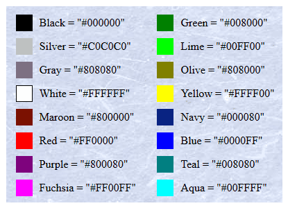
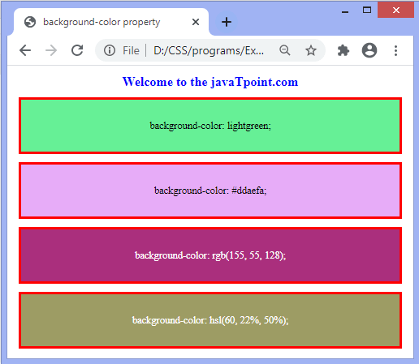
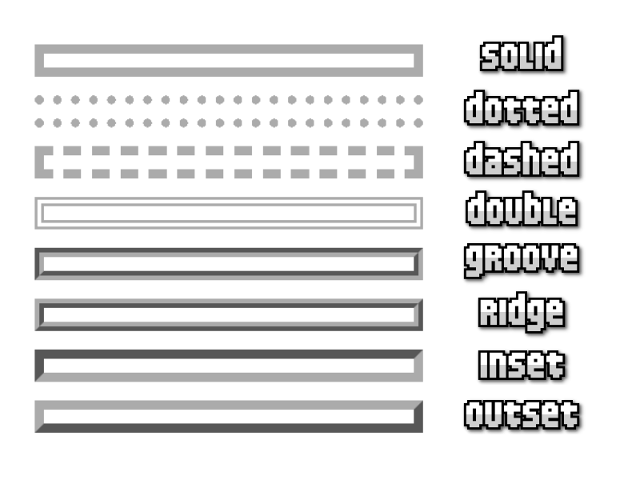
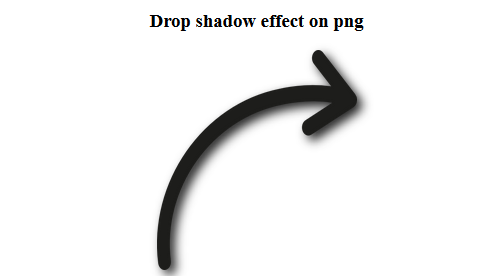
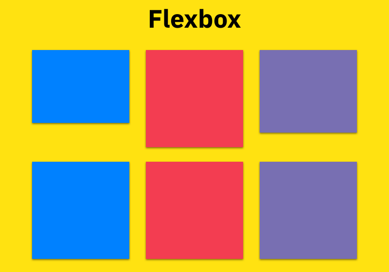
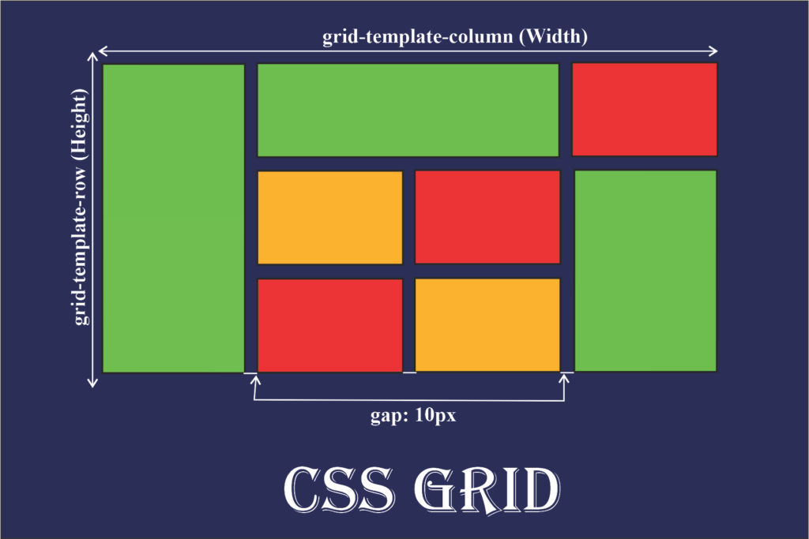
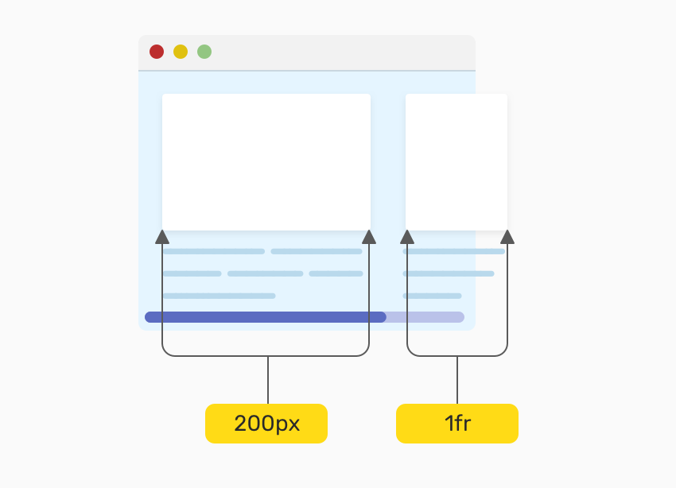
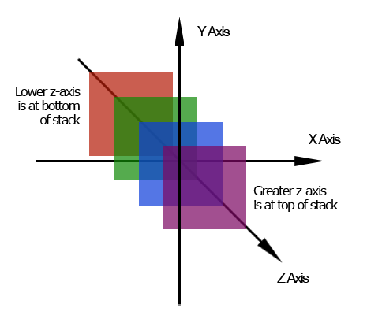

| color |
Define el color del texto. |
Red, Blue, #FF5733 |
color: blue; |
 |
MDN |
| background-color |
Establece el color de fondo de un elemento. |
Yellow, Black, #F0F0F0 |
background-color: yellow; |
 |
MDN |
| font-size |
Define el tamaño del texto. |
12px, 2em, large |
font-size: 20px; |
 |
MDN |
| border |
Agrega un borde a un elemento. |
solid, dashed, double |
border: 2px solid black; |
 |
MDN |
| text-align |
Alinea el texto dentro de un elemento. |
left, center, right |
text-align: center; |
 |
MDN |
| margin |
Define los márgenes externos de un elemento. |
10px, auto, 5% 10% |
margin: 20px auto; |
 |
MDN |
| padding |
Define el espacio interno de un elemento. |
5px, 10% 15px |
padding: 10px; |
 |
MDN |
| box-shadow |
Agrega una sombra a un elemento. |
2px 2px 5px gray |
box-shadow: 5px 5px 10px gray; |
 |
MDN |
| opacity |
Define la opacidad del elemento. |
0.5, 1, 0 |
opacity: 0.5; |
 |
MDN |
| transition |
Define efectos de animación en cambios de estilo. |
all 0.5s ease-in-out |
transition: all 0.5s ease; |
|
MDN |
| flexbox |
Define un contenedor flexible. |
flex, inline-flex |
display: flex; |
 |
MDN |
| grid |
Define un sistema de cuadrícula. |
grid, inline-grid |
display: grid; |
 |
MDN |
| overflow |
Controla cómo se muestra el contenido desbordado. |
hidden, auto, scroll |
overflow: scroll; |
 |
MDN |
| z-index |
Controla el orden de apilamiento de los elementos. |
1, 10, -1 |
z-index: 100; |
 |
MDN |